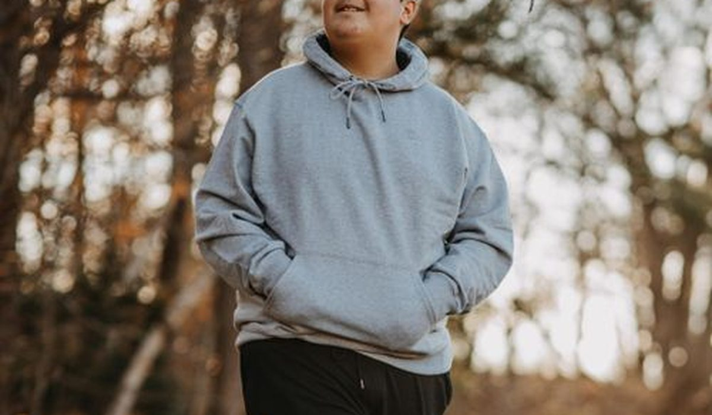
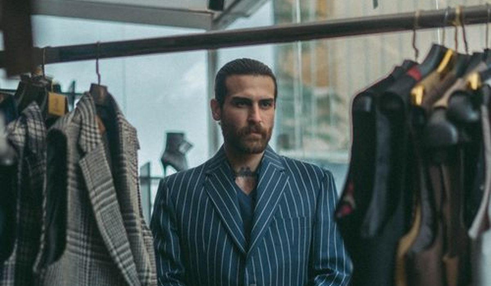

En bref
La meilleure marque de vêtements pour homme en 2026 est Kiabi avec 7,8/10, devant H&M (7,5/10) et Zara (7,3/10). Kiabi gagne sur le prix et sur la cohérence des tailles, H&M sur la régularité d'une collection à l'autre, Zara sur les coupes et les matières.
- Un jean homme va de 12 € chez Primark à 59,95 € chez Zara, pour 3 onces de denim d'écart annoncé
- Le col de chemise annoncé 39 correspond à 38,5 à 40,5 cm selon la grille officielle de la marque
- Les hoodies affichent de 240 à 450 g/m² de molleton, le prix ne suit pas toujours
- Lacoste et Decathlon réunissent moins de 5 % d'avis clients signalant une perte de couleur
Sommaire de ce comparatif
Le classement des marques de mode homme
Sur l'univers homme, la tenue au lavage des basiques pèse double dans notre note. C'est la catégorie où les avis clients parlent le plus de rachat, un t-shirt blanc et un jean revenant en tête des pièces remplacées.
01 Le meilleur rapport qualité-prixJean à 19,99 €, tailles fidèles7,8/10
Le meilleur rapport qualité-prixJean à 19,99 €, tailles fidèles7,8/10
Le meilleur rapport qualité-prixJean à 19,99 €, tailles fidèles7,8/1002 Le plus régulierCoupes stables, livraison rapide7,5/10
Le plus régulierCoupes stables, livraison rapide7,5/10
Le plus régulierCoupes stables, livraison rapide7,5/1003 Le plus modeCoupes ajustées, matières correctes7,3/10
Le plus modeCoupes ajustées, matières correctes7,3/10
Le plus modeCoupes ajustées, matières correctes7,3/10Kiabi arrive en tête grâce à un jean à 19,99 € dont les avis clients ne signalent presque jamais de perte de forme à la ceinture, et à des cols de chemise cohérents avec la taille annoncée. H&M reste la valeur sûre pour qui rachète toujours la même référence. Zara propose les coupes les plus ajustées mais taille petit d'un centimètre au col.
Le tableau comparatif des 12 marques
Deux repères par marque, un jean cinq poches coupe droite et un hoodie uni, au prix catalogue. Le tableau ajoute l'écart de col d'après la grille officielle sur une chemise annoncée 39 et le grammage affiché du molleton.
| Marque | Note /10 | Jean | Écart de col (39) | Molleton hoodie | Le point fort |
|---|---|---|---|---|---|
| KiabiNotre choix | 7,8 | 19,99 € | +0,5 cm | 300 g/m² | Le rapport qualité-prix |
| H&M | 7,5 | 29,99 € | 0 cm | 280 g/m² | La régularité |
| Zara | 7,3 | 59,95 € | -1 cm | 320 g/m² | Les coupes |
| Lacoste | 7,2 | 110,00 € | +0,5 cm | 380 g/m² | La durée de vie |
| Uniqlo | 7,1 | 39,90 € | +1 cm | 350 g/m² | Les basiques |
| Decathlon | 7,0 | 24,99 € | +1,5 cm | 400 g/m² | Le sport |
| Pull&Bear | 6,9 | 29,99 € | -1 cm | 260 g/m² | Le streetwear |
| Bershka | 6,6 | 25,99 € | -1,5 cm | 240 g/m² | Les prix jeunes |
| Primark | 6,3 | 12,00 € | +1,5 cm | 250 g/m² | Le prix |
| Shein | 5,5 | 9,00 € | Imprévisible | 220 g/m² | Le choix en ligne |
Jean cinq poches coupe droite et hoodie uni, prix catalogue hors soldes relevés en septembre 2026. Écart de col calculé depuis les grilles officielles sur une chemise annoncée 39.

Le grammage du hoodie est l'indicateur le plus parlant du panel. Entre les 220 g/m² de Shein et les 400 g/m² de Decathlon, les avis clients divergent nettement, le molleton léger étant très souvent cité pour un col et des poignets qui se détendent.
Chemises, la taille de col ne veut pas dire la même chose partout
Nous avons comparé le tour de col et la longueur de manche annoncés sur une chemise 39 chez chaque marque. L'écart maximal atteint 2 cm, soit une taille commerciale complète.
- H&M est la plus cohérente, 39 cm dans la grille pour un 39 annoncé
- Kiabi et Lacoste ajoutent 0,5 cm, confortable sans être flottant
- Zara et Pull&Bear retirent 1 cm, à éviter si vous portez une cravate
- Uniqlo et Decathlon ajoutent 1 à 1,5 cm, la coupe est plus droite
Un col annoncé 39 qui correspond en réalité à 38 cm, c'est une chemise que l'on ne ferme plus au bouton du haut après un repas. C'est le premier motif de retour cité dans les avis sur les chemises.
Costumes, ce que l'on obtient sous 200 euros
Nous avons relevé le prix d'un costume deux pièces chez cinq marques du prêt-à-porter, puis ajouté le tarif moyen des retouches pour comparer le coût réel.
| Marque | Prix costume | Doublure | Retouches | Coût réel |
|---|---|---|---|---|
| Kiabi | 119 € | Partielle | 35 € | 154 € |
| H&M | 149 € | Complète | 35 € | 184 € |
| Zara | 199 € | Complète | 40 € | 239 € |
| Celio | 179 € | Partielle | 35 € | 214 € |
| Massimo Dutti | 349 € | Complète | 0 € | 349 € |
Costume deux pièces laine mélangée, prix catalogue et tarif moyen constaté pour une retouche de manche et d'ourlet, septembre 2026.

Sous 200 €, H&M offre le meilleur compromis avec une doublure complète et une laine mélangée annoncée à 45 %. Kiabi reste l'option la plus économique pour un mariage ponctuel, avec une doublure partielle.
Kiabi, H&M ou Zara, comment choisir
Si votre priorité est le budget
Kiabi. Le jean à 19,99 € et le hoodie annoncé à 300 g/m² placent la marque devant tout le reste du panel à ce niveau de prix.
Si votre priorité est de racheter la même pièce
H&M. C'est la marque la plus régulière du panel, sa grille de tailles n'a pas bougé de plus de 0,5 cm en trois collections, ce qui n'est vrai chez personne d'autre.
Si votre priorité est la durée de vie
Lacoste sur les polos et Decathlon sur les pièces techniques. Ce sont les deux marques qui réunissent le moins d'avis négatifs sur la tenue des couleurs.
Notre verdict
Kiabi remporte notre comparatif homme 2026 avec 7,8/10, portée par le jean le mieux noté sous 25 € et des grilles cohérentes au col comme à la manche.
Si vous rachetez toujours les mêmes basiques, prenez H&M pour sa régularité. Si vous cherchez des pièces qui durent, Lacoste et Decathlon concentrent le moins d'avis négatifs sur le lavage.
Questions fréquentes
Quelle est la meilleure marque de vêtements pour homme en 2026 ?
Kiabi obtient la meilleure note globale de notre comparatif avec 7,8/10, grâce au meilleur jean sous 25 € et à des grilles de tailles cohérentes. H&M suit à 7,5/10 et Zara à 7,3/10.
Quelle marque de chemise homme taille le plus juste ?
H&M est la plus cohérente, un col annoncé 39 correspond bien à 39 cm dans sa grille. Kiabi et Lacoste annoncent 0,5 cm de plus, Zara et Pull&Bear 1 cm de moins.
Quel hoodie homme choisir selon le grammage ?
Decathlon affiche le molleton le plus dense du panel à 400 g/m², suivi de Lacoste à 380 et Uniqlo à 350. Sous 30 €, Kiabi annonce 300 g/m², au-dessus de la moyenne du panel.
Où acheter un costume homme pas cher de bonne qualité ?
Sous 200 €, H&M annonce une doublure complète et une laine mélangée à 45 % pour 149 €, soit environ 184 € retouches comprises. Kiabi descend à 154 € tout compris avec une doublure partielle.
Quelle marque homme résiste le mieux au lavage ?
Lacoste et Decathlon réunissent moins de 5 % d'avis signalant une perte de couleur. Bershka et Shein sont les plus critiquées, leur molleton étant souvent cité comme se détendant vite.
Comment sont notées les marques de ce comparatif ?
Chaque marque est notée sur cinq critères, le prix, la qualité des matières, la fidélité des tailles, la livraison et une note globale pondérée, les avis sur la tenue au lavage des basiques comptant double sur l'univers homme.
Notre méthode
Ce comparatif repose sur des données publiques, vérifiables une par une.
- Les prix sont relevés sur les sites officiels des marques, hors code promo et hors soldes
- Les écarts de taille proviennent des grilles officielles publiées par les marques, comparées entre elles
- La tenue au lavage est établie à partir des avis clients vérifiés qui mentionnent rétrécissement ou décoloration
- Les compositions et les grammages sont ceux affichés sur les fiches produit
- Aucune marque ne finance ce comparatif, ne nous rémunère ni ne le relit avant publication